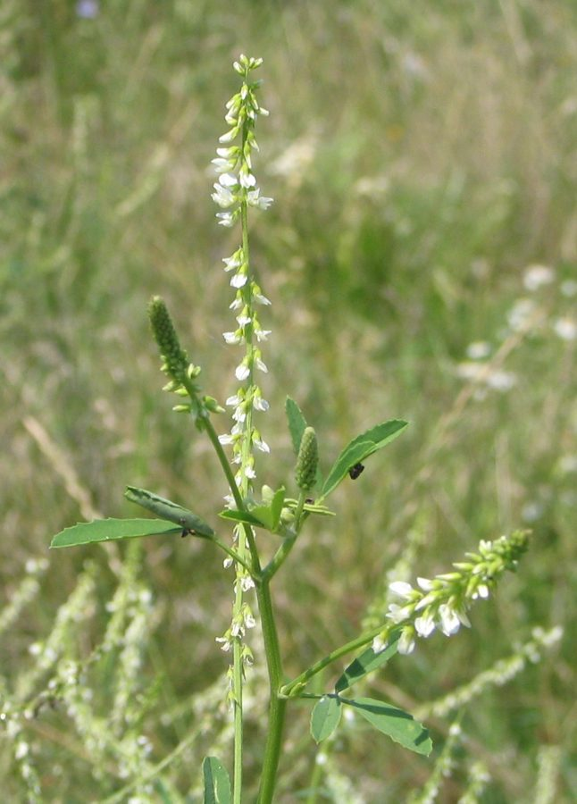

सफ़ेद सेंजीWhite Sweet Clover
Melilotus albus · Fabaceae · FLR-0262

- Scientific name वैज्ञानिक नाम
- Melilotus albus Medik.
- Family कुल
- Fabaceae
- Hindi हिंदी
- सफ़ेद सेंजी
- Local names स्थानीय नाम
- safed senji, safed senjhi, senji, white sweet clover
- Status here यहाँ की स्थिति
- naturalized
- Movement आवागमन
- Resident, here all year
- Known from कहाँ दर्ज
- Others have published records from the wider Awadh–Purvanchal plain, none yet from Basti–Ayodhya अवध–पूर्वांचल से दूसरों के प्रकाशित अभिलेख, बस्ती–अयोध्या से अभी नहीं
- IUCN IUCN
- not evaluated
- Review समीक्षा
- audited and independently read
When to look कब देखें
Expected mainly in October, November, December, January, February, March, April, May. मुख्यतः अक्टूबर, नवंबर, दिसंबर, जनवरी, फ़रवरी, मार्च, अप्रैल, मई में अपेक्षित।
Uses and possibilities उपयोग और संभावनाएँ
Drawn from the documented uses in the profile below, where each is labelled traditional, current or a research lead. All uses →
Tell it apart from इनसे अलग पहचानें
सफ़ेद सेंजी / White Sweet Clover
Melilotus albus Medik. — Fabaceae
सफ़ेद सेंजी — एक विदेशी पौधा जो अब उत्तर भारत के खेतों और बंजर जमीन पर सर्दी में उगता है। इसके पीले या सफेद छोटे फूलों की गंध बहुत अच्छी होती है, और मधुमक्खियों को बहुत पसंद है। यह पौधा मिट्टी में नाइट्रोजन जोड़ता है, इसलिए खेतों में चारे के लिए भी उगाया जाता है।
Quick Identification त्वरित पहचान
| Feature | Description |
|---|---|
| Size | Annual or biennial herb, 30–100 cm tall |
| Growth habit | Upright, slender, branching stems |
| Leaves | Trifoliate (three leaflets), small, linear-oblong, toothed |
| Flowers | Small, white or pale yellow, fragrant; in long slender spikes (racemes) |
| Fruit | Small rounded pod (legume), 3–4 mm; one-seeded |
| The test | Characteristic sweet fragrance when crushed; trifoliate leaves; white flower spikes |
Field tip: Look for a slender plant with three-leafed leaves and long spikes of small fragrant white flowers in winter fields and wastelands. The entire plant is sweetly aromatic.
Morphology आकारिकी
Biometrics (typical measurements in eastern Indian fields):
| Measurement | Range |
|---|---|
| Height | 30–100 cm |
| Leaflet length | 0.8–1.5 cm |
| Flower spike length | 5–15 cm |
| Pod diameter | 3–4 mm |
Root system: A taproot; nodulated for nitrogen fixation through association with rhizobia bacteria.
Stem: Slender, angular, smooth or slightly hairy, green, becoming reddish with age.
Leaves: Alternate, compound, trifoliate (three leaflets). Leaflets are small, linear-oblong, with serrulate margins. The terminal leaflet is slightly longer than the lateral ones.
Flowers: Small, about 3–4 mm, papilionaceous (butterfly-shaped). White or pale yellow. Strongly fragrant, especially when dried. Arranged in long, slender terminal racemes (flower spikes).
Fruit: A small, round, single-seeded pod (legume), 3–4 mm in diameter, with a reticulate surface pattern.
Fragrance: The entire plant, especially the flowers and seeds, is sweetly aromatic, giving the common name "sweet clover."
हिंदी: तीन पत्तियों वाली, पतली, सीधी। फूल सफेद, छोटे, सुगंधित। सूखा हुआ पौधा भी सुगंधित रहता है।
Behaviour & Ecology व्यवहार और पारिस्थितिकता
Melilotus albus is native to western Asia and the Mediterranean, but is now naturalized across temperate and subtropical regions. It is a nitrogen-fixing legume, improving soil fertility through symbiotic association with rhizobia bacteria in root nodules. The flowers are attractive to bees and other pollinators, making it valuable for honey production. The plant is cool-season, thriving in winter and spring in eastern UP.
हिंदी: मिट्टी में नाइट्रोजन जोड़ता है। मधुमक्खियों के लिए उत्कृष्ट पौधा। सर्दी और बसंत में बढ़ता है। गर्मी आने पर सूख जाता है।
Life Cycle / Phenology जीवन चक्र
| Month / season | Event |
|---|---|
| September–October | Seed germination; seedling stage |
| October–November | Vegetative growth; rosette formation |
| December–April | Peak growth and flowering (January–April) |
| April–May | Seed maturation and pod ripening |
| May–June | Complete senescence; seed dispersal; plant dies |
Winter annual in eastern UP; seeds overwinter in the soil.
हिंदी: सितंबर-अक्टूबर में अंकुरण। जनवरी-अप्रैल में फूल। मई में फल और बीज। जून तक सूख जाता है।
Associated Species / Interactions संबंधित प्रजातियाँ
- Pollinators: Honeybees and bumblebees actively work the flowers; important honey source.
- Nitrogen fixation: Rhizobia bacteria in root nodules.
Pests and Diseases कीट और रोग
- Rarely affected by major pests or diseases in eastern UP.
- Occasional powdery mildew in humid conditions (minor).
Agricultural / Human Relevance कृषि प्रासंगिकता
Green manure and nitrogen fixation: White sweet clover is widely used as a green manure crop in rotation to improve soil fertility. Plowed in before flowering, it adds significant nitrogen and organic matter to the soil.
Fodder: The plant is nutritious fodder for cattle and sheep, though repeated consumption can cause problems in livestock (coumarin content in the dried hay can interfere with blood clotting in rare cases).
Bee plant: An excellent honey plant; the flowers produce sweet honey of good colour and flavour. Beekeepers sometimes plant it specifically for bee forage.
Soil improvement: Nitrogen fixation in association with rhizobia makes it a valuable rotation crop in low-input agriculture.
Today: Grown in some parts of eastern UP for green manure, though use has declined with synthetic fertilizer availability.
हिंदी: गहरी जुताई से पहले खेत में मिलाया जाता है — मिट्टी में नाइट्रोजन और जैव पदार्थ जोड़ता है। पशु चारा भी है। मधुमक्खी पालकों के लिए अच्छा। खेत की उर्वरता बढ़ाने के लिए उगाया जाता है।
Expected Locally स्थानीय रूप से अपेक्षित
Not a field record. Written from published accounts for eastern Uttar Pradesh. No confirmed local sighting yet — if you have seen it, that is what the atlas needs.
अभी तक स्थानीय पुष्टि नहीं। यह विवरण प्रकाशित स्रोतों से है, किसी अवलोकन से नहीं।
White Sweet Clover is to be expected in winter fields, field margins, and wastelands throughout Basti district where it may have been sown deliberately or arrived as a contaminant in seed lots. GBIF holds published records from the wider Awadh–Purvanchal plain. The plant is visible primarily during winter and spring (October–May) when in flower. A first confirmed local record would be a photograph showing the white flower spikes and trifoliate leaves with place and date.
Distribution वितरण
Global range: Native to western Asia and Mediterranean; naturalized in temperate and subtropical regions worldwide.
In India: Widespread in winter crop regions; commonly used as green manure in northern India.
In Uttar Pradesh: Common in winter season fields; widely used for nitrogen fixation.
In Basti district / eastern UP: Likely present in winter crop areas, though status uncertain; may be increasing with green manure revival programs.
Research Questions शोध प्रश्न
Anyone can investigate these | कोई भी इन प्रश्नों की जाँच कर सकता है
- How much nitrogen does white sweet clover add to the soil when plowed in at flowering? — Measure soil nitrogen before and after a clover crop rotation.
- What bees and insects visit the flowers, and over what period? / किस समय मधुमक्खियाँ फूलों पर आती हैं? — Observe flower spikes; record visitors and times.
- How much honey can be produced from one hectare of white sweet clover? — Interview local beekeepers; gather yield data.
- Does the plant's growth rate vary with planting date or soil type? — Sow in different times and soils; compare growth.
- Are there local farmers who still practice green manure using this plant? / क्या कोई किसान इसे खाद के रूप में उगाते हैं? — Interview farmers; document traditional practices.
Similar Species मिलती-जुलती प्रजातियाँ
| Species | How to tell apart | हिंदी |
|---|---|---|
| Melilotus indicus (Indian Sweet Clover) | Yellow flowers instead of white; flowers smaller | पीली सेंजी — पीले फूल |
| Berseem clover (Trifolium alexandrinum) | Denser flower head; pinkish flowers; coarser plant | बरसीम — गुच्छा गोल, गुलाबी फूल |
| Alyce Clover (Alysicarpus vaginalis) | Smaller plant; flowers in short dense clusters; different leaf shape | सरिवन — छोटा, गोल गुच्छा |
Field rule: A tall slender clover with long spikes of small fragrant white flowers and distinctly sweet fragrance is Melilotus albus.
Taxonomy & Classification वर्गीकरण
Original description. Described by Johann Siegesbeck Medikus in 1787. The genus name Melilotus comes from Greek meli (honey) and Latin lotus (legume), referring to the sweetness and legume family.
Subspecies. Monotypic — no subspecies are currently recognised.
Family and order placement. Order Fabales, family Fabaceae (legume/pea family), subfamily Faboideae, tribe Trifolieae.
Phylogenetic notes. Melilotus is closely related to Trifolium (true clovers) and Medicago (alfalfa).
IUCN status rationale. Not evaluated. Widely naturalized; no conservation concerns.
Photo Gallery फोटो गैलरी
Photos needed आवश्यक फोटो
- [ ] Whole plant in field (पूरा पौधा)
- [ ] White flower spikes (फूल)
- [ ] Trifoliate leaf detail (पत्तियाँ)
- [ ] Seed pod close-up (फल)
No photos yet — add field photos to media/species/white_sweet_clover/ and run node scripts/sync_photos.js.
References संदर्भ
- Medikus, J.S. (1787). Botanische Beobachtungen, 1787, p. 148. [original description]
- Hooker, J.D. (1876). Flora of British India, Vol. 2. L. Reeve, London.
- Bor, N.L. (1960). The Grasses of Burma, Ceylon, India and Pakistan. Pergamon Press, London.
- Duthie, J.F. (1903). Flora of the Upper Gangetic Plain. Government Printing, Calcutta.
- Botanical Survey of India — Flora of Uttar Pradesh.
- GBIF Occurrence Data — Melilotus albus, Uttar Pradesh (2010–2025).
Source file: species/flora/crops_associated/white_sweet_clover.md